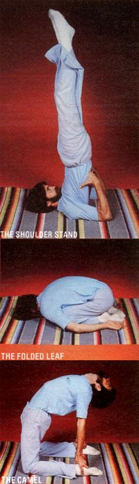
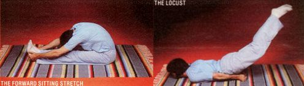
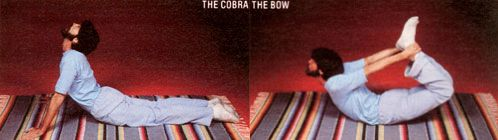
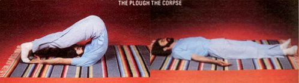

Suffering from the "post-holiday heavies?" Try this ancient form of exercise.
Not many exercise regimens can boast of having no special requirements for space or equipment . . . a rich spiritual background . . . and techniques that can be mastered by anyone between the ages of 5 and 95 . . . while virtually guaranteeing their followers increased agility and energy, plus trimmer bodies and clearer minds. Yoga, however, can make such claims, because it's no ordinary training program: It's an integral part of a centuries-old Hindu philosophy that concentrates on helping the practitioner to realize his or her true nature, and-as a result of that achievement-to feel a sense of closeness with what the Eastern tradition calls the Universal Spirit.
Yoga-which was first described in 2,000 B.C., in the Sutras of the Indian scholar Patanjali-takes its name from a Sanskrit word meaning bond, attachment, or union . . . and is divided into several branches, which include the yoga of action, the yoga of mental mastery, the yoga of knowledge, and the yoga of devotion. These and other practices are traditionally considered landmarks along the path to liberation of the self . . . a journey that takes as its starting point hatha yoga (the yoga of physical force).
Masters of yogic philosophy believe that, in order to purify their minds (and thus enable themselves to experience a state of cosmic consciousness), they must first gain control over their physical bodies through a series of cleansings, breath control exercises, and the peculiar positions-or asanas -of hatha yoga. Over the past few years, a growing number of Westerners have become familiar with that physical aspect of the regimen, and hatha yoga is now commonly taught in recreation centers, theaters, schools, retirement homes, prisons, and athletic clubs across North America.
The term hatha is derived from the Sanskrit "ha" (sun) and "tha" (moon), and symbolizes the duality of body and mind (the twin complementary parts of the whole self, which form a complete being when brought together). Although it's basically a preparatory discipline, to be mastered prior to tackling the more meditative branches of yoga, hatha can be studied by individuals who have no intention of pursuing the more advanced yogic techniques . . . and many Westerners have found that surprising results-both physical and mental- can be achieved by conscientious practice of the asanas.
While yoga can't provide the heart-pumping workout possible with aerobic exercise, it does offer quite a few long-range benefits for both the body and the mind. The slow, measured movements of the asanas develop balance, agility, and flexibility as they massage the body's muscles and joints through repeated sequences of contraction and relaxation. Furthermore, the physical benefits are usually reflected in an improved mental equilibrium . . . that is, the student experiences the tranquillity of a quiet, free -flowing state of mind. Finally, the novice yogi or yogini-by learning to sustain each posture for several seconds-often develops a fine-tuned power of concen tration that can be an aid in his or her daily work.
Through its wide range of postures, hatha yoga aims to tone the whole body . . . and while the practice doesn't always result in weight loss, it does-when kept up-help the body to redistribute weight in ways that fit a person's bone structure. Most asanas-especially those that involve upside-down positions-are also said to help regulate the metabolism by putting beneficial pressure on the glands and stimulating their action with a gentle "inner massage".
The physical branch of yoga helps to break down the painful connective tissue that can grow in joints, too . . . so it can ease the aches and pains of such chronic ailments as rheumatism, arthritis, and bursitis. Yoga is often said to alleviate migraine headaches, as well as constipation and other digestive problems . . . and it can sometimes effectively lower blood pressure by improving circulation. What's more, many of the basic hatha yoga exercises involve breath control, thereby increasing the amount of life-giving oxygen absorbed by the blood.
Hatha yoga, then, is a wonderful form of exercise! In fact, after just a few days of experimenting with the beginning postures, you can expect to experience increased energy, a heightened sense of awareness, and the first indications of a firmer, better-toned physique. Not long thereafter, as your complexion starts to glow and your hair takes on a new sheen, you should also be able to see the difference yoga can make.
The word asana comes from the Sanskrit term for "seat" or "sitting method", and it's generally believed that the intricate set of hatha poses now familiar to yoga students evolved from a few simple meditation positions. Each hatha asana is referred to by a tongue-twisting-for Westerners-Sanskrit term (which usually ends in "-asana"), but many have also been given more easily remembered names . . . of animals, vegetation, farm implements, and various Hindu deities.
There are only a few basic guidelines to be observed while practicing yoga. First, posturing should always be done on an empty stomach, so wait at least three hours after eating a full meal-or one hour after a snack-before beginning your asanas. Many think that the exercises are best performed immediately after waking each day. However, you'll probably find that your body is less flexible in the early morning, so you may prefer to do some of the more difficult postures later . . . perhaps as a means of bedtime relaxation.
Practice your yoga in a quiet, airy room that's warm enough to keep your muscles "primed". (What could be more pleasant on chilly winter evenings than a few minutes of yoga in front of the fireplace or woodstove?) Be sure you're working on a level surface, and use a towel or blanket to pad the floor underneath you.
Start with the easier asanas-such as the ones shown in the accompanying photos-and then progress as your body becomes more flexible. You can learn a few hatha asanas from the pictures and detailed descriptions given here, but there's really no substitute for a competent teacher who can see (and correct) your mistakes as you develop. To find a class in your area, check with the community recreation department or the YMCA/YWCA. Or-if you live in an urban area-inquire at a local dance school . . . the institution may well have a staff member qualified to teach yoga.
The most important thing to remember when practicing your postures is to MOVE SLOWLY! The benefits of yoga are gained only through gradual, con trolled movements, which should be performed with a fluid grace that feels-and looks-beautiful. Assume each asana slowly, hold it-keeping as still as possible-and then ease back to the starting point. (In most poses, try to maintain position for 15 to 30 seconds . . . but never hold any asana beyond the point where the stretching becomes any more painful than "normal" exercise.) You need to adopt each posture only once (or twice at most) in the sequence, and-through it all-breathe slowly and deeply, without forcing your respiration to keep time with the exertions of the exercise.
Here, then, are descriptions of a few postures . . . just enough to initiate you into the technique of hatha yoga. These positions represent the basic moves that, together, form a foundation for the more difficult asanas practiced by master yogis . . . and they're familiar parts of most beginning yoga classes. (Although the poses pictured here are all on-the-floor exercises, there's also an entire system of standing postures which can be learned by the novice.)
The FOLDED LEAF-a composite of several classic embryonic/fetal postures-is a good opening position for your hatha session, since it relaxes and stimulates the whole body. Sit on your calves-with your feet turned under and your toes pointing back-and then drop your torso forward till it rests on your knees. Now, place your arms loosely beside your legs (with the palms facing upward) and bend your neck until the crown of your head touches the floor in front of your knees. Rest in this position for about 30 seconds, while breathing slowly and allowing your mind to turn away from any distracting thoughts.
Next, move into the FORWARD SITTING STRETCH (called Paschimottanasana), starting from a seated position with your legs extended directly in front of you. Keeping your back as straight as possible, lean forward-sliding your palms down your legs-and try to catch your toes . . . or the soles of your feet, if you're already fairly flexible. At the same time, rest your face on your knees and breathe normally (this may be the most difficult part of the exercise!). The Paschimottanasana tones the abdominal organs, stretches the spine, and massages the heart muscle. It also sends an increased blood flow to the pelvic region, so it's often recommended as a self-help treatment for sexual misfunctions.
The CAMEL (Ustrasana) is helpful in correcting stiff or rounded shoulders, and it can also develop leg muscles and expand the chest and diaphragm. To go into the pose, kneel on the floor with your knees and ankles together and your palms on your hips. Then, bending from the knees, curve your spine backward and grasp your heels with your hands. Contract your buttocks, arch your back as far as possible, and allow your head to fall back. Remain in the Camel position for up to half a minute, breathing freely.
The beginning series of asanas continues with the SHOULDER STAND, or Sarvangasana . Begin by lying flat on your back, then bend your legs and bring the knees up to your chest. Move the trunk of your body into a vertical position and support it by placing your hands against the small of your back. Then, without losing balance, slowly raise your legs straight up so that your body forms a vertical line from shoulders to toes. Now, move your chest toward your chin and center the weight of your body on your shoulders and neck. Breathe freely and remain in this posture for at least 20 seconds . . . during which time you'll enjoy the benefits of added blood flow to the brain, scalp, and facial tissues.
The Shoulder Stand also strengthens the spine and relieves congestion in the legs, pelvis, and abdomen (making this asana a potential boon for sufferers of varicose veins, menstrual disorders, and digestive ailments). For obvious reasons, however, the Sarvangasana -as well as all other inverted postures-should not be practiced by anyone with high blood pressure, spinal malformations, angina, sinusitis, or severe head or neck difficulties.
A natural successor to the Shoulder Stand is the PLOUGH, or Halasana . Lower your legs, from the vertical posture, over your face . . . so that your toes touch the floor in back of your head (you'll end up looking at your thighs). You can either leave your hands in the back-supporting position, or-after you have practiced the asana a number of times-stretch them out on the floor and touch your toes, as demonstrated in the photo. The Plough offers the same physical benefits as does the Shoulder Stand . . . and it can reportedly relieve headaches, tired eyes, and sore necks.
The COBRA (Bhujangasana) is an excellent toner for the whole body, and is especially good for the abdomen, buttocks, and chest. Its great value is in the way it stretches and exercises the entire length of the spine, from the lumbar region up to the neck. This pose can also sometimes relieve constipation, and is said to increase blood flow to the reproductive organs.
Lie down on your stomach with your elbows bent and hands placed flat on the floor a few inches in front of your shoulders. Slowly raise your head, your neck, and then your spine-vertebra by vertebra-until you've reared up in the "strike" position of an attacking cobra. Let your upper back do most of the lifting work. Continue to rise until your arms are straight (or as nearly so as possible) . . . keeping your body, from the navel down, flat on the floor. Hold the final position for 10 to 20 seconds, then slowly lower your torso.
The LOCUST (Salabhasana) is an appropriate follow-up to the Cobra, since it exerts a different kind of pressure on the spine. In addition to strengthening the lower back, this posture brings blood to the neck and brain, and enhances the tone of the pelvic muscles. Again, begin by lying face down on the floor . . . but this time, press your arms-with each hand clenched in a fist-under your hipbones. Next, slowly raise your legs as high as possible while balancing on your arms, chest, shoulders, and chin. Stay in the pose for 10 to 15 seconds, then gently lower your legs to the ground.
The BOW (Dhanurasana) combines the beneficial effects of the Locust and the Cobra, and it's said to be an especially healthful pose for women. Lie on your stomach, bend your knees, then reach back and grab your ankles in an effort to lift your thighs and chest off the floor. Initially, you probably won't be able to manage the feat . . . but it'll be easier to pull the "bow" taut if you spread your legs wide apart at first.
After your muscles have strengthened, you'll be able to keep your legs together as you lift off the ground and balance only on your stomach. Hold the drawn-bow pose for at least six seconds (once you achieve a good balance, you can even rock back and forth slightly in this asana), then release your ankles and move back into the starting position. The Dhanurasana promotes freer circulation in the whole body, and you should feel a healthy glow as you come out of it. Abdominal and stomach muscles are massaged, too, and the Bow tends to stretch-and firm-the legs, chest, throat, and jawline. It's also wonderful for loosening and limbering the spine, the hips, and the shoulders.
You can finish up your hatha session with a few minutes of relaxation in the appropriately named CORPSE pose (Savasana). Lie on your back with your legs and arms outstretched, close your eyes, and relax your body as completely as you can. Keep your arms slightly away from your body and your legs apart, and don't try to point your toes or straighten your fingers, since doing so could create unnecessary tension. Concentrate on your breathing for a minute or two-or until it becomes quiet and even-then allow your attention to travel through your body in a conscious effort to relax each part. Begin at the feet and move upward through your legs, torso, arms, shoulders, and head . . . instructing each muscle to "let go" and allowing the tension to drain out of it.
If your attention wanders, patiently guide it back to your body and continue the relaxation sequence. This posture-when you indulge in it for 15 minutes or so-can help eliminate fatigue and soothe the nerves, leaving you refreshed, recharged ... and looking forward to your next session of hatha yoga!
EDITOR'S NOTE: A number of excellent books are available to students of yoga. Two of the best are Light on Yoga by B.K.S. lyengar (Schocken Books, 1977, $6.95 in paperback) and Yoga and Health by Slevarajan Yesudian and Elisabeth Haich (Harper & Row, 1954, $8.95). Look for them in your favorite bookstore.
|
 |
 |
 |
|
 |
|
|